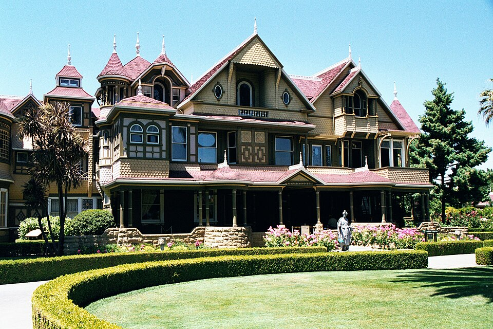

The History of Winchester House
Hidden among the streets of San Jose, California, stands one of America's most unusual Victorian mansions. The Winchester House was once the private residence of Sarah Winchester, heiress to the Winchester rifle fortune. Beginning in 1886, a modest farmhouse gradually became a sprawling 160-room mansion filled with elaborate craftsmanship, unexpected passageways, and architectural curiosities. Today, the house is celebrated as both a historic landmark and the subject of countless mysteries.

Origins and Architecture
The mansion began as an eight-room farmhouse purchased by Sarah Winchester in 1886. Over the following 36 years, extensive additions and renovations transformed it into an extraordinary example of Victorian architecture. Its Queen Anne influences, decorative woodwork, stained-glass windows, and maze-like interior make it especially distinctive. Visitors encounter stairways with unusual destinations, doors that lead nowhere, and rooms arranged in surprising ways. The house's unconventional design reflects decades of changes rather than a single, carefully planned construction project.
People and Changing History
Sarah Lockwood Pardee Winchester inherited a substantial fortune after the death of her husband, William Wirt Winchester, in 1881. Having also lost her infant daughter years earlier, she eventually relocated from Connecticut to California. At her estate, known as Llanada Villa, Sarah devoted considerable attention to construction and landscaping. Her niece, Marion “Daisy” Merriman, lived with her for approximately 15 years. Following Sarah's death in 1922, the property was sold and eventually transformed from a private residence into a public attraction.
Notable Events
One of the mansion's most significant moments occurred during the devastating 1906 San Francisco earthquake. The house suffered considerable damage, and its once-impressive seven-story tower and much of the fourth floor were subsequently removed. Construction continued until Sarah Winchester's death on September 5, 1922. On June 30, 1923, the mansion opened to public visitors, beginning its transformation into a famous California attraction. In 1974, its architectural significance earned it a place on the National Register of Historic Places.
Legends and Mysteries
The Winchester Mystery House is famous for the legend that Sarah Winchester believed she was haunted by the spirits of people killed by Winchester rifles. According to the story, a medium warned her that she must keep building to escape a deadly curse. Newspaper speculation about the mysterious construction appeared as early as 1895, while Sarah was still alive. Although the legend remains popular, direct historical evidence confirming her supposed supernatural motivations has not been established. The house's unusual architecture and decades of ghost stories have helped keep the mystery alive.
Evidence and Unanswered Questions
Historical records establish that Sarah Winchester owned the estate, oversaw extensive construction, and lived there until her death in 1922. The building itself provides physical evidence of its many renovations, architectural experiments, and earthquake damage. However, the precise reasons behind some of Sarah's decisions remain uncertain. Her surviving personal records do not establish that ghosts or spiritual warnings directed the construction. Whether motivated by personal interests, changing needs, or other considerations, Sarah left behind a remarkable architectural legacy whose mysteries continue to inspire curiosity.
Sources and References
The historical information presented on this page was compiled from the Winchester Mystery House's official history and timeline, California State Parks' historic landmark documentation, and historical architectural records. These sources provide information about Sarah Winchester, the mansion's construction, significant events, and the distinction between documented history and popular legend.
References
California State Parks — Winchester House https://ohp.parks.ca.gov/ListedResources/Detail/868
Santa Clara University — Winchester Mystery House as a Labyrinth https://dh.scu.edu/exhibits/exhibits/show/winchester-mystery-house-as-a-/rhetoric-of-the-tour
Society of Architectural Historians — Winchester Mystery House https://sah-archipedia.org/buildings/CA-01-075-0047
Winchester Mystery House — History https://winchestermysteryhouse.com/history/
Winchester Mystery House — Historical Timeline https://winchestermysteryhouse.com/timeline/